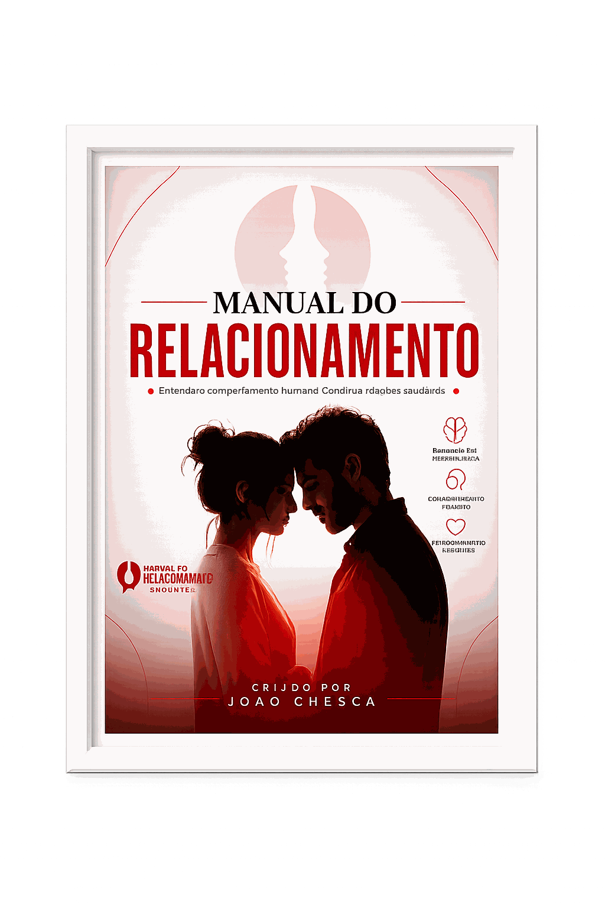
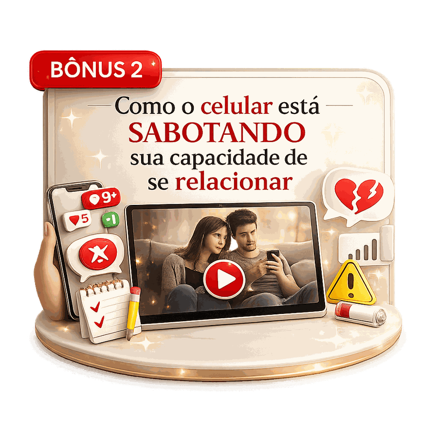
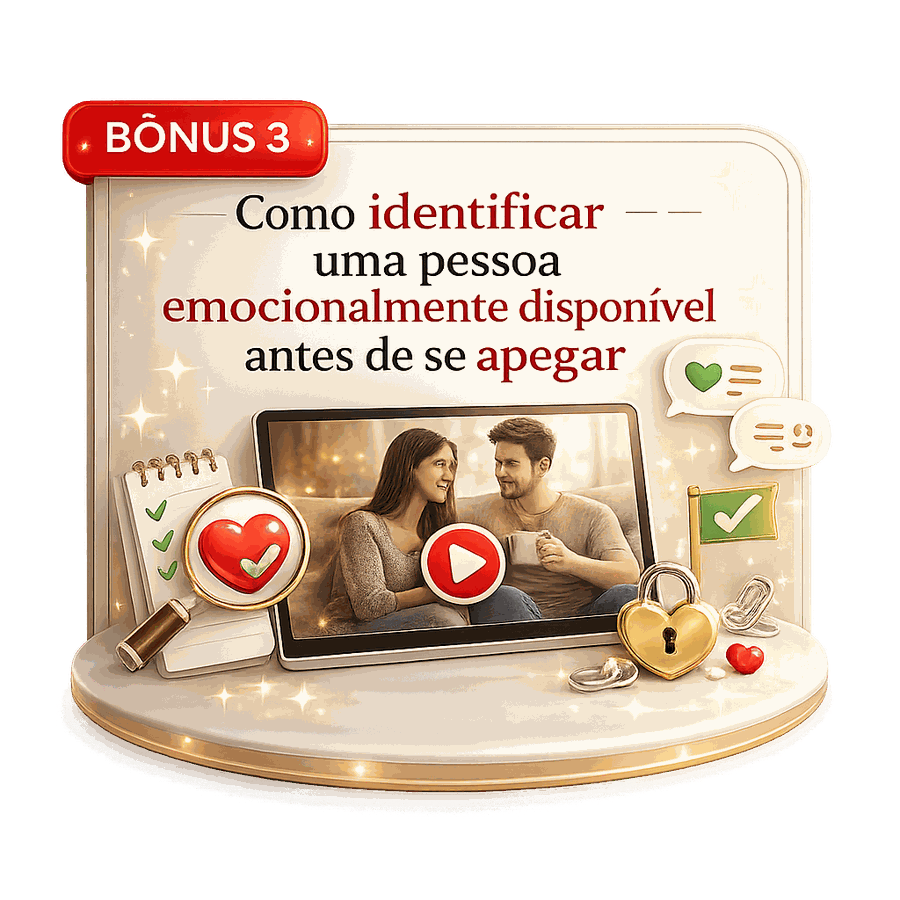
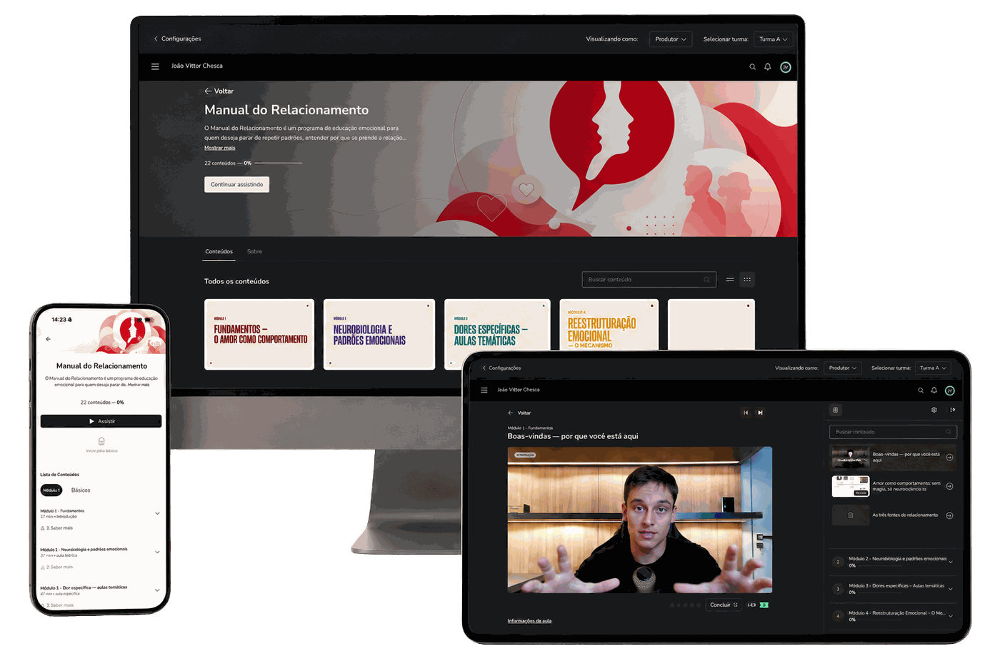
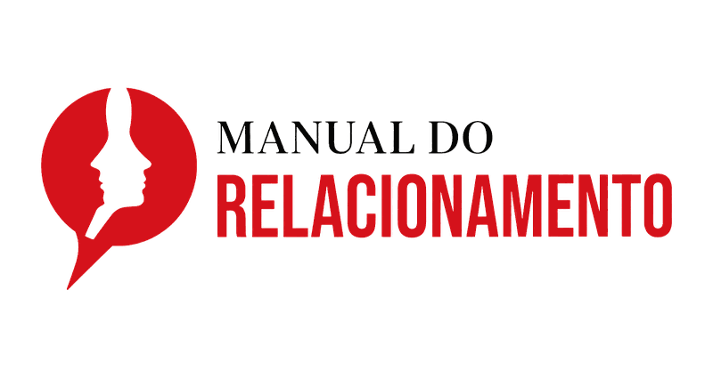

Dê o play no vídeo e veja como ter relacionamentos que fazem você feliz.
Acesso online e imediato • Garantia incondicional de 7 dias
A pessoa muda.
O rosto muda.
O nome muda.
Mas, depois de algum tempo, você percebe que a história parece sempre terminar do mesmo jeito.
Você se entrega, cria expectativas, tenta fazer dar certo e, quando percebe, está novamente dentro de uma relação que machuca, sufoca ou deixa você em constante insegurança.
“Será que o problema sou eu?”
Não, não é!
A ORIGEM DO MANUAL
Meu nome é João Chesca. Sou psicólogo e especialista em relacionamentos.
Quando entrei na faculdade de Psicologia, algo não saía da minha cabeça:
Por que pessoas que desejam ser amadas, que se esforçam e que realmente querem construir algo saudável continuam terminando em relações que machucam?
Eu não estava falando de pessoas que não tentavam. Estava falando de quem se dedicava, de quem cedia, de quem insistia. E, mesmo assim, continuava presa em ciclos de insegurança, dependência, manipulação, afastamento e sofrimento.
Por isso, passei sete anos estudando neurociência, psicologia comportamental, processos cognitivos, aprendizagem, vínculos emocionais e protocolos clínicos.
As pessoas eram diferentes. Tinham idades diferentes, histórias diferentes e relacionamentos completamente diferentes. Mas muitas carregavam dores muito parecidas.
“Deve existir alguma coisa errada comigo.”

POR ISSO CRIAMOS ESTE PROGRAMA
Um programa de educação emocional criado para ajudar você a entender seus padrões, regular melhor suas emoções e construir vínculos mais conscientes e saudáveis.
Conselho diz o que você deveria fazer.
Entendimento mostra por que você faz o que faz — e o que precisa mudar para construir algo diferente.
“Pela primeira vez consegui entender por que ficava tão desesperada quando alguém se afastava.”
Eu sempre me chamava de carente e me julgava por sentir tanto. Quando comecei a entender a função dos meus comportamentos, parei de enxergar tudo como um defeito pessoal. Hoje consigo perceber meus gatilhos antes de agir no impulso.
— Mariana, 31 anos
“Eu sabia que a relação fazia mal, mas não entendia por que era tão difícil sair.”
Quando aprendi sobre reforçamento intermitente, muitas coisas fizeram sentido. Percebi que não era apenas falta de força de vontade. Existia um ciclo que me prendia. Entender isso me ajudou a parar de me culpar e começar a tomar decisões mais conscientes.
— Camila, 37 anos
“Descobri que não escolhia pessoas tão diferentes quanto imaginava.”
Os relacionamentos pareciam diferentes no início, mas a dinâmica sempre acabava parecida. Ao olhar para minha história de aprendizagem e para as crenças que eu carregava, consegui enxergar um padrão que antes era invisível.
— Rafael, 34 anos
“Depois do término, eu achava que estava exagerando.”
Entender que a dor afetiva não era apenas uma metáfora me trouxe alívio. Eu parei de lutar contra tudo o que sentia e comecei a atravessar o processo com mais consciência e menos julgamento.
— Fernanda, 29 anos
“Achava que um relacionamento saudável dependia apenas de encontrar a pessoa certa.”
O Manual me mostrou que também preciso saber reconhecer padrões, comunicar necessidades, regular minhas reações e observar a disponibilidade emocional da outra pessoa. Hoje faço escolhas com muito mais clareza.
— Lucas, 39 anos
“Aprendi a diferenciar intensidade de conexão real.”
Sempre confundi a euforia do início com um sinal de que a relação era boa. O Manual me ajudou a enxergar que consistência, respeito e disponibilidade emocional dizem muito mais sobre um vínculo do que qualquer promessa grandiosa. Hoje observo antes de me entregar.
— Daniel, 45 anos
Não é sobre deixar de sentir. É sobre parar de ser governado pelo que você não entende.
Porque ele não tenta controlar o comportamento do outro. Ele ajuda você a entender o que acontece dentro de uma relação.
Conselho não substitui entendimento
Você não precisa apenas saber o que deveria fazer. Você precisa entender por que ainda não consegue fazer.
EM OUTRAS PALAVRAS...
Você vai abandonar a ideia de que tudo o que sente é irracional ou inexplicável. Aprende a diferenciar sentimentos, ações, escolhas e compromissos.
Você começa a reconhecer os padrões emocionais, cognitivos e comportamentais que aparecem nos seus relacionamentos e entende por que reage como reage.
Com mais consciência, você observa seus pensamentos e emoções antes de reagir. Em vez de agir por impulso, escolhe uma resposta mais funcional.
Você aprende a avaliar relações pela compatibilidade, consistência, respeito, disponibilidade e comportamento real da outra pessoa — não apenas pela intensidade inicial.
Você não passa a controlar tudo o que sente.
Mas deixa de ser controlado por aquilo que não entende.
AO ENTRAR HOJE



Tudo isso deveria custar
R$ 2.388
CONDIÇÃO ESPECIAL
Pague apenas uma vez e tenha acesso ao Manual do Relacionamento e a todos os bônus.

O ESPECIALISTA
João Chesca é psicólogo e especialista em relacionamentos. Desde a faculdade, uma pergunta passou a orientar seus estudos:
Por que pessoas que realmente querem amar e ser amadas continuam repetindo padrões que geram sofrimento?
Para encontrar respostas, João dedicou sete anos ao estudo de áreas como:
Durante sua atuação no consultório, percebeu que muitas pessoas não sofriam por falta de esforço. Sofriam porque nunca haviam recebido um mapa para entender o que acontecia dentro de uma relação.
Meu objetivo não é dizer o que você deve sentir. É ajudar você a entender o que sente, por que reage como reage e quais escolhas se tornam possíveis a partir dessa clareza.
Você terá 7 dias completos para acessar o Manual do Relacionamento, assistir às primeiras aulas e conhecer a metodologia.
Caso perceba que o programa não é adequado para você, basta solicitar o cancelamento dentro do prazo. Você receberá 100% do valor investido de volta.
Sem burocracia. Sem julgamento.
O risco é nosso.
F.A.Q
Talvez elas estejam respondidas aqui.
Não. O Manual é um programa de psicoeducação e educação emocional. Ele ensina conceitos e ferramentas relacionados ao comportamento humano, aos vínculos e à regulação emocional, mas não substitui psicoterapia, avaliação psicológica ou atendimento clínico individual.
Não. O Manual pode ajudar quem está em um relacionamento, quem está conhecendo alguém, quem viveu um término ou quem deseja compreender seus padrões antes de iniciar uma nova relação.
Não. O programa também foi criado para quem deseja prevenir padrões disfuncionais, entender melhor suas próprias reações e construir vínculos mais conscientes.
Depois da confirmação do pagamento, você receberá as orientações para acessar a plataforma online. As aulas são gravadas e poderão ser assistidas no seu ritmo.
O acesso é liberado após a confirmação da compra. Você não precisa esperar a formação de uma turma.
Sim. O conteúdo é disponibilizado em uma plataforma online que pode ser acessada por qualquer dispositivo compatível com a internet.
Você poderá pagar à vista ou parcelar em até 12 vezes, conforme as opções disponibilizadas na página de pagamento.
Você tem 7 dias a partir da compra para conhecer o programa. Caso não queira continuar, poderá solicitar o reembolso integral dentro desse prazo.
Você não está sofrendo porque existe algo errado com você.
Está sofrendo porque ninguém nunca entregou o
MAPA.
De R$ 2.388 por
12x de R$ 29,99
ou à vista com desconto
Clique no botão e comece hoje a entender seus padrões, regular melhor suas emoções e construir relacionamentos que realmente fazem bem.
Não prometo que todas as respostas serão fáceis.
Mas prometo que, finalmente, muitas coisas começarão a fazer sentido.